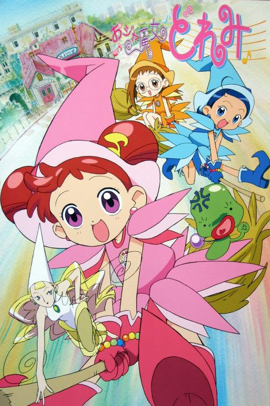

Magical DoReMi
おジャ魔女どれみ
Doremi accidentally exposes a witch, turning her into a frog, and must become a witch apprentice to turn her back.
An original anime, so there's no book to continue with.
7.4AniList score
—Animeter, no votes yet
201episodes, 4 seasons
Rate it or report where you stopped
4 seasons, 201 episodes
In airing order. Episode numbers on this site count straight through every season, so season 2 starts at episode 52.
1
1999 · TV
Magical DoReMi
Episodes1–5151 ep
2
2000 · TV
Ojamajo Doremi Sharp
Episodes52–10049 ep
3
2001 · TV
Motto! Ojamajo Doremi
Episodes101–15050 ep
4
2002 · TV
Ojamajo Doremi Dokkaan!
Episodes151–20151 ep
Sources: AniList